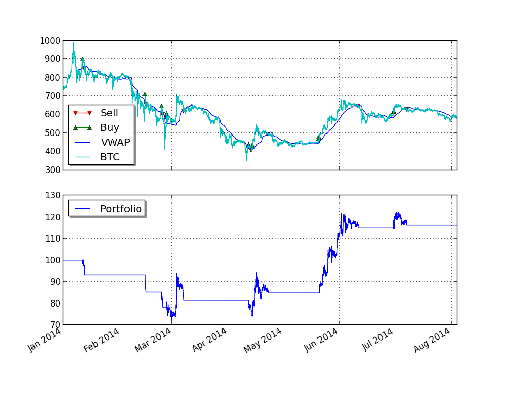

Although it is absolutely possible to backtest a strategy with tick data as supplied by http://www.bitcoincharts.com/about/markets-api/ using pyalgotrade.bitcoincharts.barfeed.CSVTradeFeed, you may want to to backtest using summarized bars at a different frequency to make backtesting faster.
As of 12-Aug-2014, http://api.bitcoincharts.com/v1/csv/bitstampUSD.csv.gz has 4588830 events so we’ll transform a portion of it into 30 minute bars for backtesting purposes with the following script:
from pyalgotrade.bitcoincharts import barfeed
from pyalgotrade.tools import resample
from pyalgotrade import bar
import datetime
def main():
barFeed = barfeed.CSVTradeFeed()
barFeed.addBarsFromCSV("bitstampUSD.csv", fromDateTime=datetime.datetime(2014, 1, 1))
resample.resample_to_csv(barFeed, bar.Frequency.MINUTE*30, "30min-bitstampUSD.csv")
if __name__ == "__main__":
main()
It will take some time to execute, so be patient. The resampled file should look like this:
Date Time,Open,High,Low,Close,Volume,Adj Close
2014-01-01 00:00:00,732.0,738.25,729.01,734.81,266.17955488,
2014-01-01 00:30:00,734.81,739.9,734.47,739.02,308.96802502,
2014-01-01 01:00:00,739.02,739.97,737.65,738.11,65.66924473,
2014-01-01 01:30:00,738.0,742.0,737.65,741.89,710.27165024,
2014-01-01 02:00:00,741.89,757.99,741.89,752.23,1085.13335011,
2014-01-01 02:30:00,752.23,755.0,747.0,747.2,272.03949342,
2014-01-01 04:00:00,744.98,748.02,744.98,747.19,104.65989075,
.
.
We can now take advantage of pyalgotrade.barfeed.csvfeed.GenericBarFeed to load the resampled file and backtest a Bitcoin strategy. We’ll be using a VWAP momentum strategy for illustration purposes:
from pyalgotrade import bar
from pyalgotrade import strategy
from pyalgotrade import plotter
from pyalgotrade.technical import vwap
from pyalgotrade.barfeed import csvfeed
from pyalgotrade.bitstamp import broker
from pyalgotrade import broker as basebroker
class VWAPMomentum(strategy.BacktestingStrategy):
def __init__(self, feed, brk, instrument, vwapWindowSize, buyThreshold, sellThreshold):
strategy.BacktestingStrategy.__init__(self, feed, brk)
self.__instrument = instrument
self.__vwap = vwap.VWAP(feed[instrument], vwapWindowSize)
self.__buyThreshold = buyThreshold
self.__sellThreshold = sellThreshold
def _getActiveOrders(self):
orders = self.getBroker().getActiveOrders()
buy = filter(lambda o: o.isBuy(), orders)
sell = filter(lambda o: o.isSell(), orders)
return buy, sell
def _cancelOrders(self, orders):
brk = self.getBroker()
for o in orders:
self.info("Canceling order %s" % (o.getId()))
brk.cancelOrder(o)
def _buySignal(self, price):
buyOrders, sellOrders = self._getActiveOrders()
self._cancelOrders(sellOrders)
brk = self.getBroker()
cashAvail = brk.getCash() * 0.98
size = round(cashAvail / price, 3)
if len(buyOrders) == 0 and size > 0:
self.info("Buy %s at %s" % (size, price))
try:
self.limitOrder(self.__instrument, price, size)
except Exception, e:
self.error("Failed to buy: %s" % (e))
def _sellSignal(self, price):
buyOrders, sellOrders = self._getActiveOrders()
self._cancelOrders(buyOrders)
brk = self.getBroker()
shares = brk.getShares(self.__instrument)
if len(sellOrders) == 0 and shares > 0:
self.info("Sell %s at %s" % (shares, price))
self.limitOrder(self.__instrument, price, shares*-1)
def getVWAP(self):
return self.__vwap
def onBars(self, bars):
vwap = self.__vwap[-1]
if vwap is None:
return
price = bars[self.__instrument].getClose()
if price > vwap * (1 + self.__buyThreshold):
self._buySignal(price)
elif price < vwap * (1 - self.__sellThreshold):
self._sellSignal(price)
def onOrderUpdated(self, order):
if order.isBuy():
orderType = "Buy"
else:
orderType = "Sell"
self.info("%s order %d updated - Status: %s - %s" % (
orderType,
order.getId(),
basebroker.Order.State.toString(order.getState()),
order.getExecutionInfo(),
))
def main(plot):
instrument = "BTC"
initialCash = 100
vwapWindowSize = 400
buyThreshold = 0.05
sellThreshold = 0.01
barFeed = csvfeed.GenericBarFeed(bar.Frequency.MINUTE*30)
barFeed.addBarsFromCSV(instrument, "30min-bitstampUSD.csv")
brk = broker.BacktestingBroker(initialCash, barFeed)
strat = VWAPMomentum(barFeed, brk, instrument, vwapWindowSize, buyThreshold, sellThreshold)
if plot:
plt = plotter.StrategyPlotter(strat)
plt.getInstrumentSubplot(instrument).addDataSeries("VWAP", strat.getVWAP())
strat.run()
if plot:
plt.plot()
if __name__ == "__main__":
main(True)
This is what the plot looks like:
